범용 접근성 프로필 패스
QR 한 번이면
키오스크가
나에게 맞춰요
글자 크기, 쉬운 말, 음성 안내, 큰 버튼. 나에게 편한 방식을 휴대폰에 담아 두고 키오스크에 보여 주면, 화면이 그 방식으로 바뀌어요. 장애나 나이는 묻지 않아요.
이렇게 써요
만들고, 보여 주면
화면이 바뀌어요
한 번 만들어 두면 병원 접수기, 카페 주문기처럼 어느 키오스크에서든 같은 QR을 써요.
-
1
편한 방식을
직접 시험
해서 골라요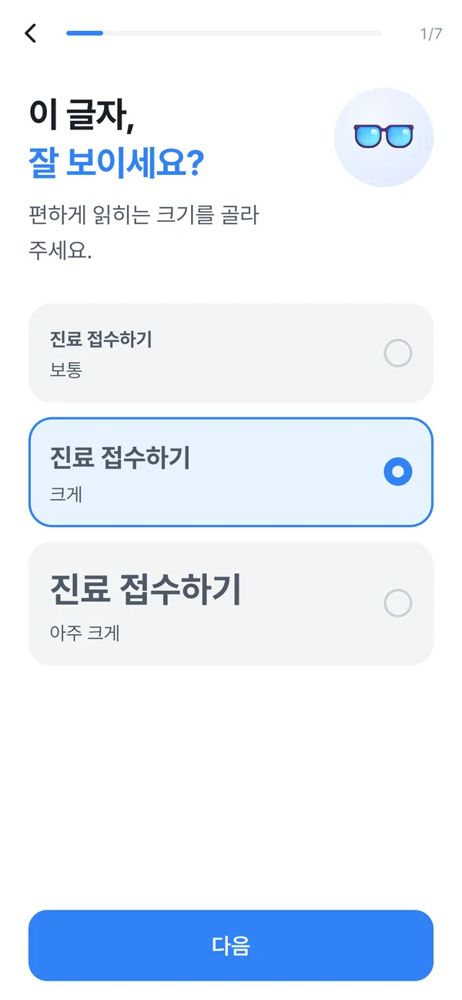
-
2
키오스크에
내 방식 패스
를 보여 줘요 -
3
글자·버튼·말이
내 방식
으로 바뀌어요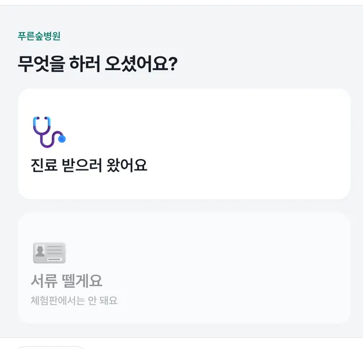
-
4
끝나면 키오스크에서
바로 지워져요
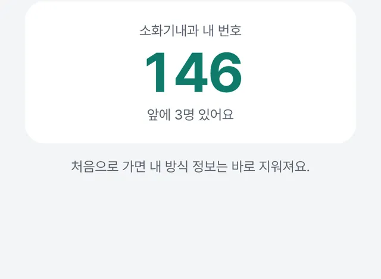
AI가 하는 일
말로 해도
알아들어요
“속이 쓰리고 소화가 안 돼요”라고 말하면 키오스크 안의 AI가 가까운 진료과를 맨 앞에 놓아요. 고르는 건 사람이고, 잘 모르겠으면 바로 직원을 부를 수 있어요.
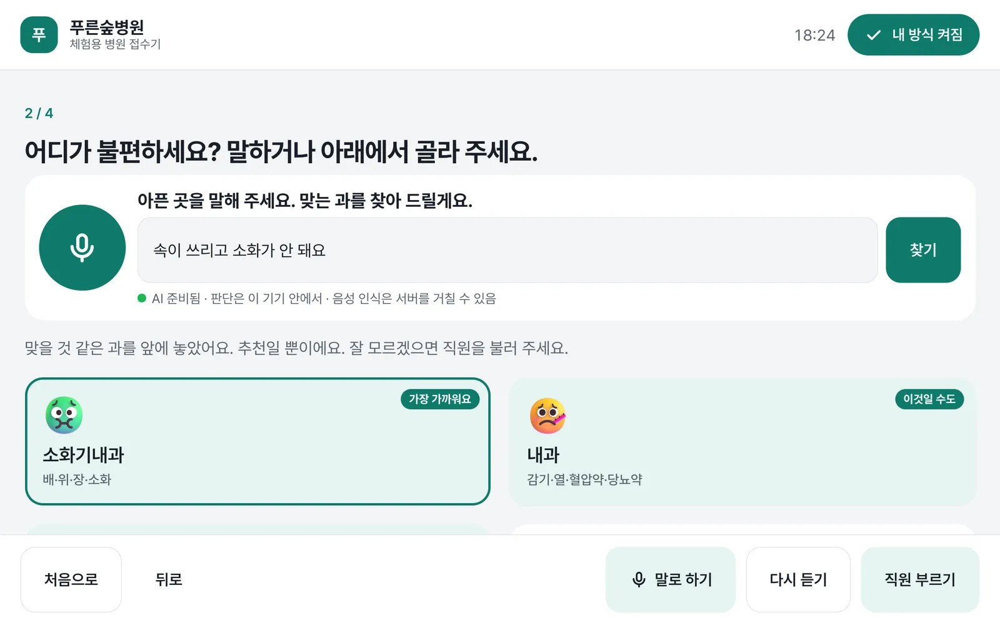
- 말로 물어봐요 아픈 곳을 말하면 AI가 가까운 과 세 곳을 골라요.
- 판단은 기기 안에서 문장 비교는 키오스크 안에서 해요.
- 가까운 과를 맨 앞에 추천일 뿐이고, 고르는 건 사람이에요.
- 언제든 직원 부르기 어느 화면에서든 같은 자리에 있어요.
- 처음으로 = 바로 지우기 처음 화면으로 가면 내 방식이 지워져요.
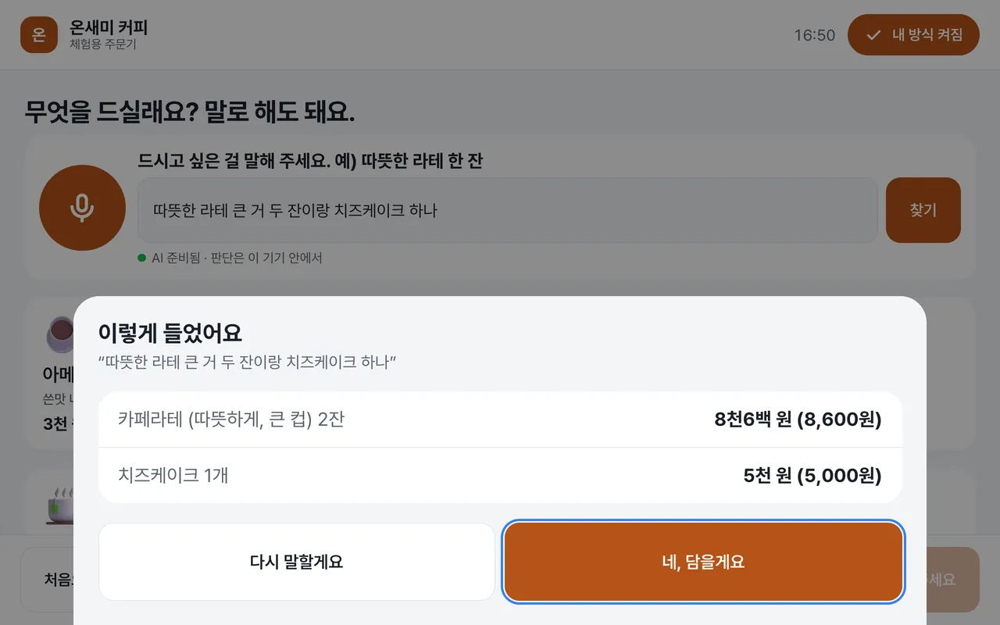
주문도 한 번에
말하면 돼요
“따뜻한 라테 큰 거 두 잔이랑 치즈케이크 하나”를 메뉴·온도·크기·수량으로 나눠 알아듣고, 담기 전에 크게 다시 보여 줘요. 값은 “8천6백 원”처럼 쉬운 말로도 보여 줘요.
같은 키오스크, 다른 화면
사람마다 편한 방식이
다르니까요
QR 하나로 글자 크기, 대비, 버튼 크기, 쉬운 말, 음성 안내, 제한시간이 함께 바뀌어요. 아래는 같은 체험용 키오스크에서 찍은 실제 화면이에요.
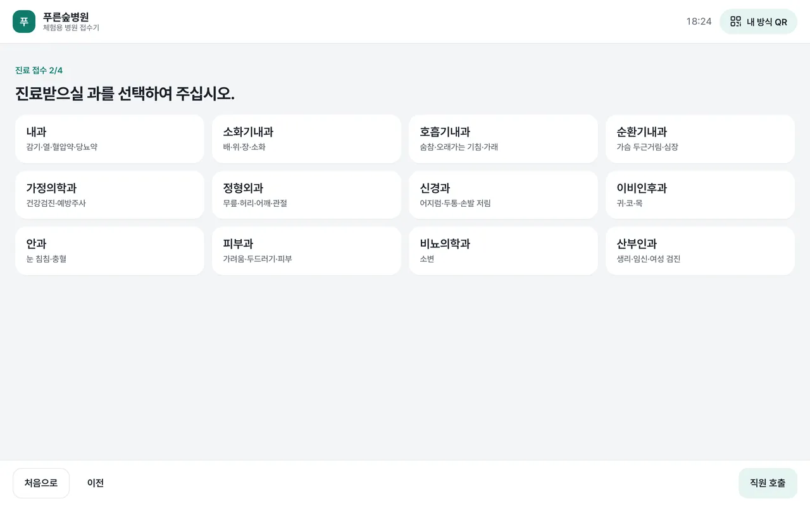
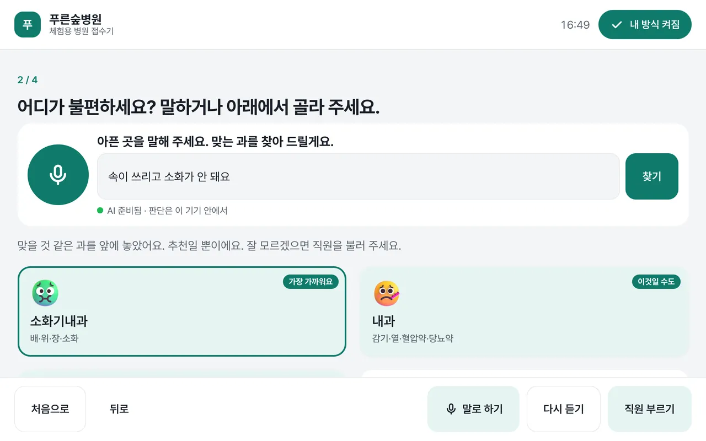
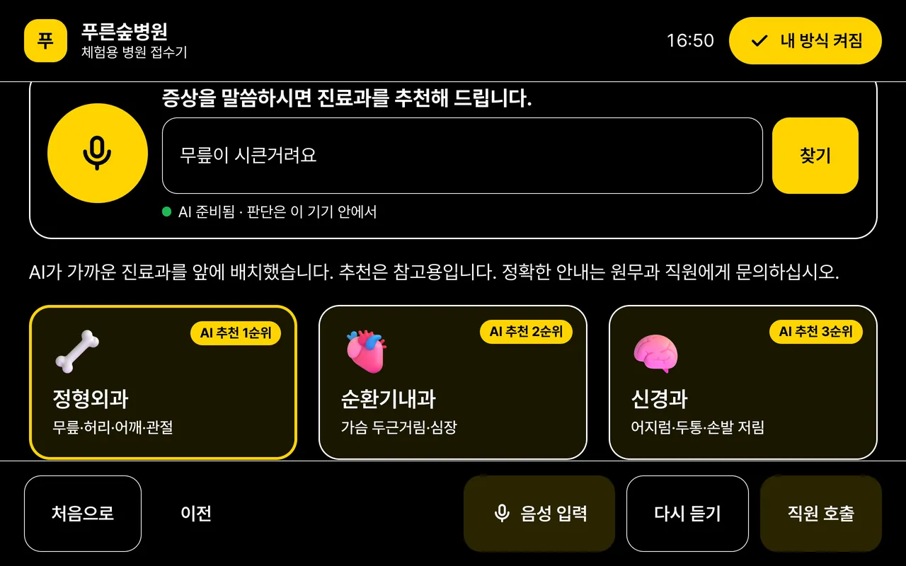
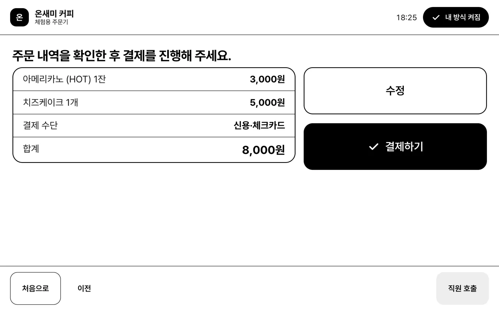
안전하게
급할 땐 접수보다
사람이 먼저
 응급 표현이면 바로 직원 호출“가슴이 쥐어짜듯 아파요” 같은 말에는 진료과 추천 대신 직원을 부르고 119를 안내해요.
응급 표현이면 바로 직원 호출“가슴이 쥐어짜듯 아파요” 같은 말에는 진료과 추천 대신 직원을 부르고 119를 안내해요.- QR에는 기능 코드만이름·연락처·장애 같은 정보는 없어요. 1분마다 새 QR이 나오고, 5분 지난 QR은 받지 않아요.
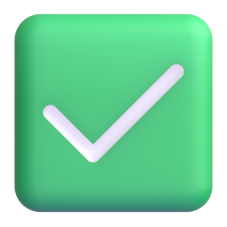
결제·접수 전에 다시 확인크게, 소리로 한 번 더 보여 주고 “네, 맞아요”를 눌러야 넘어가요. 끝나면 지워요처음 화면으로 돌아가면 키오스크에 남지 않아요. 운영자는 개인정보 없는 이용 숫자만 봐요.
끝나면 지워요처음 화면으로 돌아가면 키오스크에 남지 않아요. 운영자는 개인정보 없는 이용 숫자만 봐요.
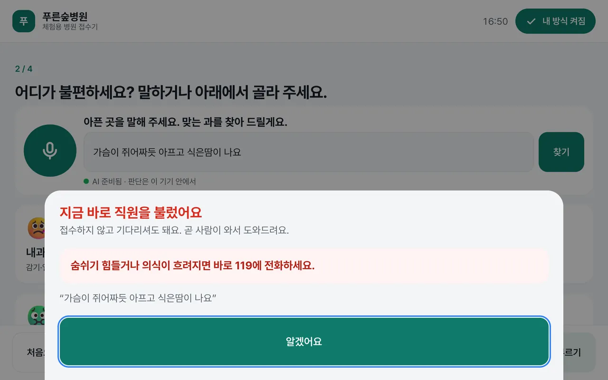
숫자로 보면
개발에 쓰지 않은 문장으로
정직하게 쟀어요
시험 문장은 개발자가 직접 썼고, 개발할 때 보지 않은 확인용 문장으로만 쟀어요. 아직 실제 이용자 시험은 하지 않았어요. AI 성능 시험에서 같은 문장으로 직접 재 볼 수 있어요.
직접 해 보기
지금 바로
체험해 보세요

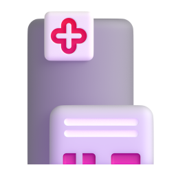
병원 접수 키오스크 아픈 곳을 말하면 AI가 진료과를 찾아 줘요. 응급 표현이면 직원을 불러요. 해 보기 →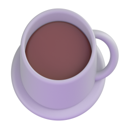
카페 주문 키오스크 “따뜻한 라테 큰 거 두 잔”처럼 말하면 메뉴·온도·크기·수량을 알아들어요. 해 보기 →QR을 찍기 어려우면 키오스크 첫 화면의 ‘체험용 프로필 고르기’를 눌러 주세요.